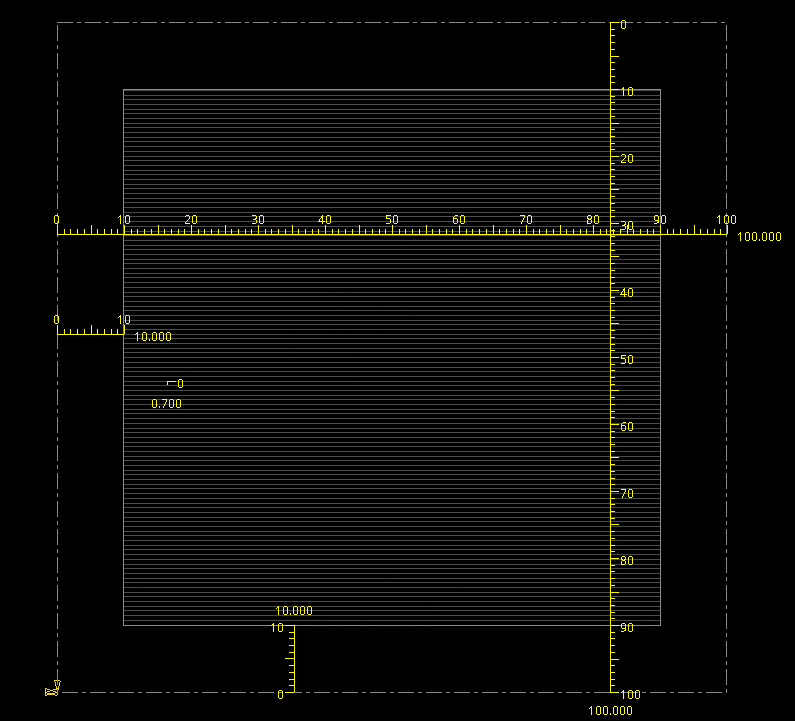
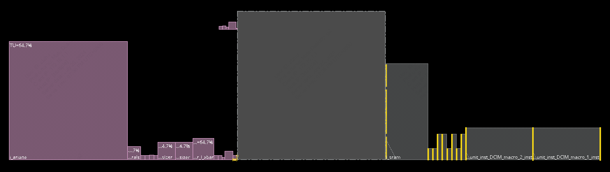
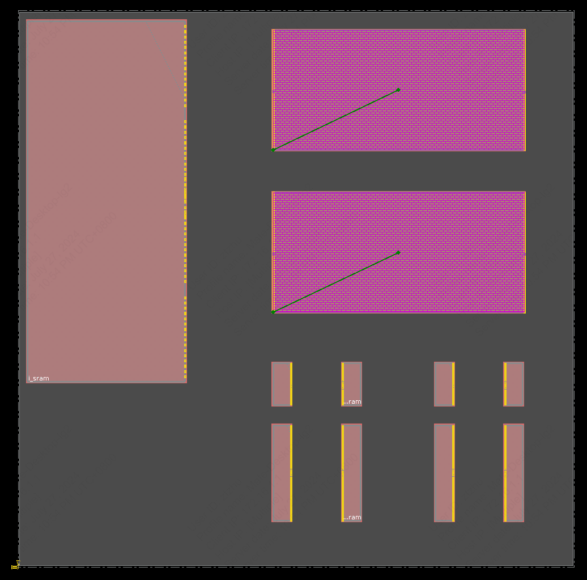
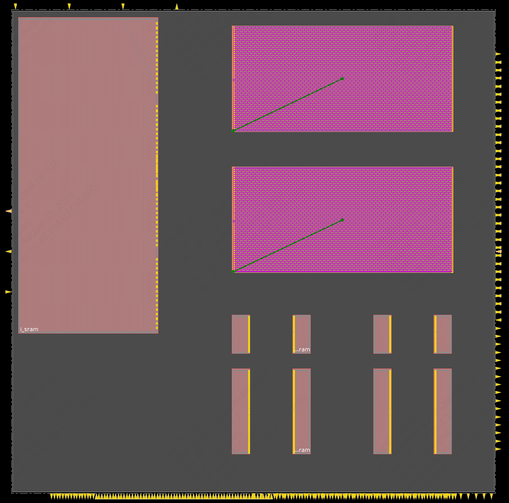
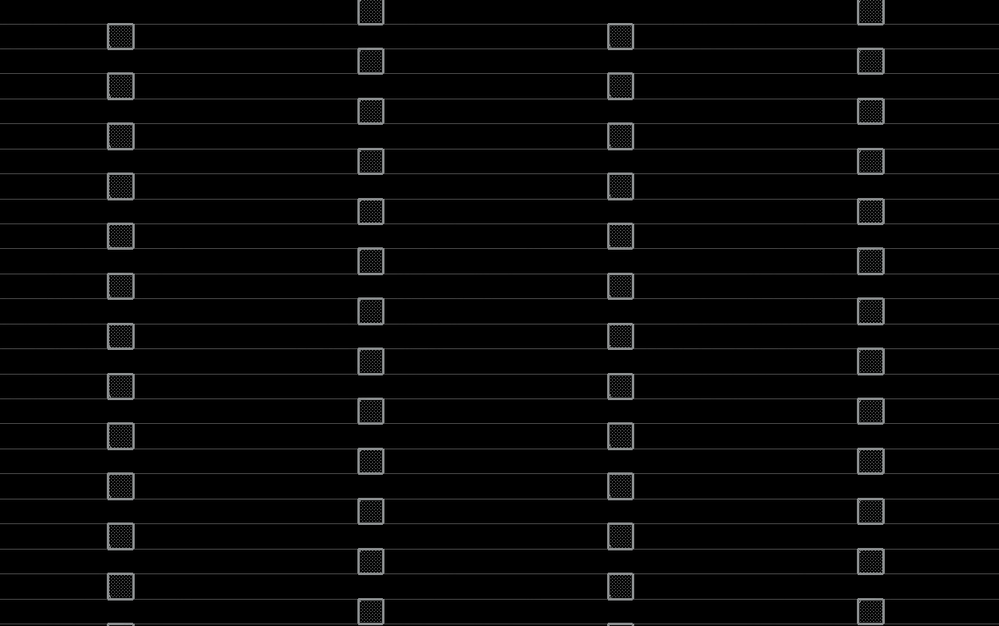
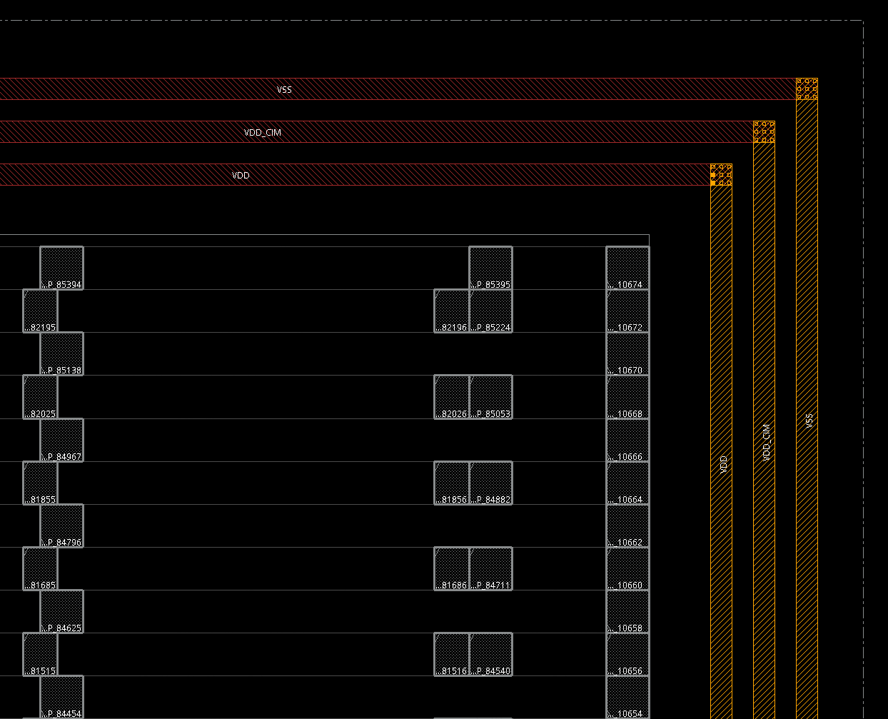
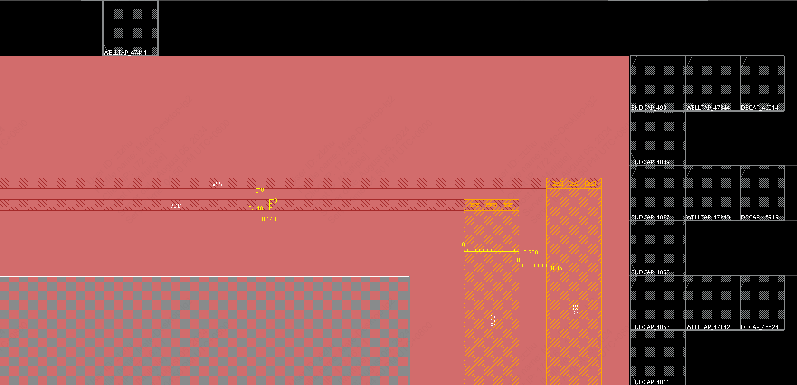
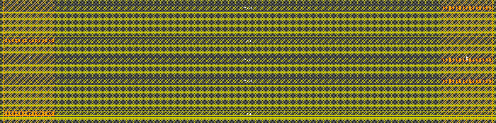
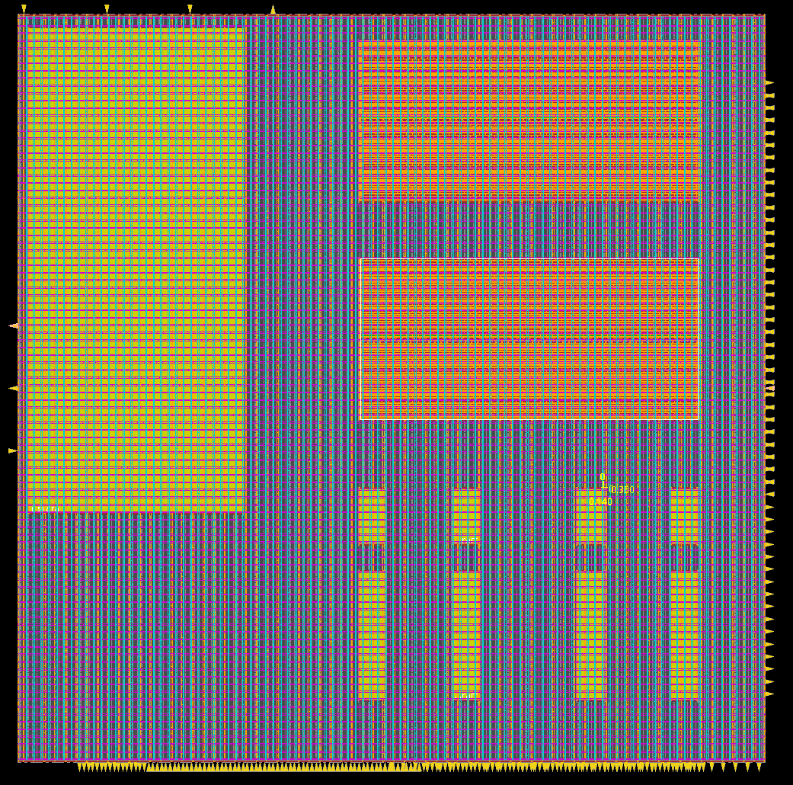
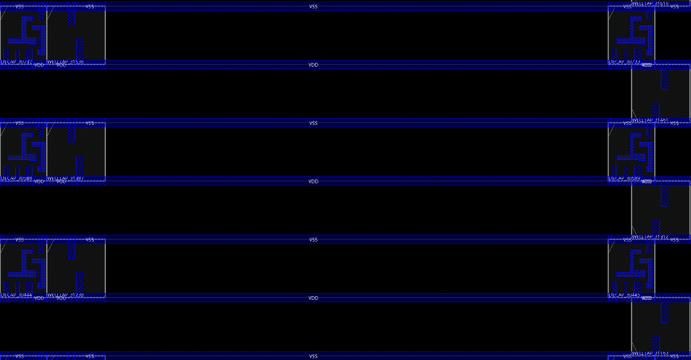

4. 数字子系统的物理设计
Warning
Under Development!
在完成数字模块的逻辑综合之后得到门级网表。以此为基础使用 Cadence Innovus 进行数字子系统的物理设计（后端设计）。
在后端设计中，许多脚本参数设置，例如电源网络的 Width，Spacing，以及 Macro 的摆放位置需要根据版图大小和布局布线情况来设定，需要多次的迭代优化。
物理设计模板文件说明
注意
同数字子系统的逻辑综合一样，在后端设计中，我们继续使用 /work/home/ztzhu/tapeout_templates/submodule_tapeout/ 文件夹。
物理设计的输入主要用到模板文件中的以下内容：
./work/：Innovus 的启动目录，存放 Innovus 的执行日志（包括用户输入命令和工具输出信息）；./data/：存放 Genus 逻辑综合得到的门级网表文件，也用于存放Innovus的输出文件（包括GDSII,LEF,SDF等） ；./scripts/：存放 Innovus 工具调用的脚本；./my_scripts/：存放用户进行物理设计各个阶段的命令脚本；./sram/（可选）：数字子系统中例化的SRAM高速缓存或寄存器堆的专用 IP 核（CDL,LEF,LIB,Verilog等）；./asic_ip/（可选）：数字子系统中例化的其他 IP 核（例如 CIM Macro），或者更低层级的数字子系统的相关文件（CDL,LEF,LIB,Verilog等）。
物理设计流程介绍
该模板文件以 CVA6 RISC-V CPU 的后端设计流程作为示例。 在这个 CPU 中，包括用 SRAM Compiler 生成的主存储器、I-Cache 和 D-Cache，以及定制设计的 CIM 模块。 我们将按照顺序逐一介绍数字子模块物理设计的流程。
4.1 修改 init_invs.tcl
在使用 Innovus 进行后端设计前，需要对工程脚本进行一些修改。
注意
在此，我们默认已经在逻辑综合之前修改了 ./scripts/core_config.tcl, ./scripts/design_inputs_macro.tcl, ./scripts/tech.tcl中部分内容（包括时钟周期、标准工艺库，添加了 SRAM IP 文件、ASIC IP 文件等）。
在 ./scripts/init_invs.tcl 中，定义了数字子系统的 Power 与 Ground 信号名称。
在这个设计中，定制设计的CIM有单独的供电 VDD_CIM ，其余 SRAM IP 和标准单元共用 VDD。
4.2 启动 Cadence Innovus
打开一个终端，进入到 ./work/ 文件夹中，并启动 Innovus。Innovus 的日志文件位于 innovus.log，用户通过终端命令行和 GUI 界面操作所对应执行的命令记录在 innovus.cmd，均在 ./work/ 文件夹中。
cd /work/home/ztzhu/tapeout_templates/submodule_tapeout/work/
rm -rf innovus.cmd* innovus.log* # clear previous innovus output files
b innovus
提示
每次启动 Innovus 都会生成一个新的日志文件，所以我们建议经常清理，以免文件过多影响后续操作。
在终端中启动 Innovus 之后，可以在该终端中输入 TCL 脚本命令，也可以在弹出的 Innovus GUI 进行操作。
在我们的模板文件中主要依赖于命令行脚本进行后端设计。使用 Innovus 进行后端设计所用到的 TCL 命令均存放在 ./my_scripts/ 中。
使用文本编辑器打开 ./my_scripts/innovus_script.tcl （推荐使用 GVIM ）。
观察 ./my_scripts/innovus_script.tcl，可以看到 Innovus 的物理设计流程大致分成了几个阶段，在 Innovus 终端中读入相应的命令即可（例如 source ../my_scripts/add_pin.tcl）。
接下来按照顺序对物理设计流程中的关键命令进行说明。
4.3 执行 invs_init_setting.tcl
观察 ./my_scripts/invs_init_setting.tcl 中包含的命令。
导入设计到 Innovus
setMultiCpuUsage 设置 Innovus 可以使用的 CPU 核数。对于现有的服务器，选择 -localCpu 32 可以保证 Innovus 稳定运行。
警告
若使用 setMultiCpuUsage -localCpu max -cpuAutoAdjust true -verbose，可能会导致 Innovus 闪退。
source -verbose ../scripts/core_config.tcl
source -verbose ../scripts/tech.tcl
source -verbose ../scripts/init_invs.tcl
source -verbose ../scripts/invs_setting.tcl
将此前修改过的4个脚本文件读入到 Innovus 中，包括数字子系统顶层模块名称（$rm_core_top）、各个文件的路径、标准工艺库的选择等内容。
此时我们经过逻辑综合的数字子系统已经导入到 Innovus 中。
saveDesign 命令在后端设计流程的各个步骤均会出现，用于保存目前后端设计的进度。
FIXME!!!
在后续的物理设计流程中，若出现错误或者需要回溯到之前的设计进度，可以使用restoreDesign命令载入之前保存的设计。
例如(bug here)：restoreDesign ${rm_core_top}.design_planning_init.enc
设置后端不使用的标准单元
set_dont_use [get_lib_cellls FA1D0BWP7T30P140HVT]
set_dont_use [get_lib_cellls FA1D1BWP7T30P140HVT]
set_dont_use [get_lib_cellls FA1D2BWP7T30P140HVT]
上述三个全加器标准单元在后续 DRC 检查时会报错，因此在布局布线之前设置不使用这些标准单元。
设置版图大小
set cell_height 0.7
set macro_halo_spc [expr 1 * $cell_height]
set macro_halo_spc_2 [expr 2 * $cell_height]
set macro_halo_spc_4 [expr 4 * $cell_height]
set die_sizex 1200
set die_sizey 1200
以上命令设置了几个物理设计中所使用到的变量大小：
$cell_height是标准单元的高度；$macro_halo_spc用于设置 Macro Routing Blockage 的宽度。$die_sizex,$die_sizey分别是该模块版图的物理宽度与物理高度。
一个初始的版图类似下图所示。

中央带有横条纹的区域称为 Core box，用于摆放 Macro 和标准单元。所有标准单元的宽度各不相同，但是高度均为 $cell_height（对于22nm工艺，即为0.7um）。
在 Core box 的四周到 I/O 管脚之间通常留有一定的间距，用于摆放 Core Ring 和 I/O 管脚布线。
floorPlan 命令用于指定版图的大小。
floorPlan -d {<W H Left Bottom Right Top>}，使用该命令设置版图大小总共需要6个参数，分别代表：
- 完整版图 (Die box) 的宽度
- 完整版图 的高度
- Core box（用于摆放标准单元的版图部分）到I/O左侧边界的距离
- Core box 到 I/O 底部边界的距离
- Core box 到 I/O 右侧边界的距离
- Core box 到 I/O 上方边界的距离
因此，设置上述版图大小的命令为：floorPlan -d 100 100 10 10 10 10。
4.4 执行 place_macro.tcl
查看 ./my_scripts/place_macro.tcl 中包含的命令。
查看 Macro
在 Innovus GUI 界面右上角选择 Floorplan View，如下图所示。

可以看到初始的版图如下所示。

除去 Die Box 之外，左侧的粉色正方形为 RTL 代码中的模块层次，正方形的大小表示了模块的预估面积。
TU & EU
正方形左上角 TU=64.7% 为 Target Utilization (TU)，是指所有的标准单元和 Macro 的面积除以版图的面积。
此外，还有 Effective Utilization (EU)，在整体版图面积的基础上除掉了 Placement，Routing Blockage 等其他阻碍物的面积，Innovus 默认不会显示EU。
Die Box 右侧为该数字模块中例化的 IP 核，在该案例中包括若干 SRAM 和2个 CIM Macro。
检查 Macro
在这个时候可以检查此前例化的 SRAM 等 IP 是否有成功导入 Innovus。 有时因为文件路径设置错误，会出现没有成功例化的情况。
给 Macro 设置别名
# Main Memory
set mainmem i_sram
# D$
set dcache_tag0 i_ariane/i_cva6/gen_cache_wt.i_cache_subsystem/i_wt_dcache_i_wt_dcache_mem/gen_tag_srams[0].i_tag_sram
set dcache_tag1 i_ariane/i_cva6/gen_cache_wt.i_cache_subsystem/i_wt_dcache_i_wt_dcache_mem/gen_tag_srams[1].i_tag_sram
set dcache_data0 i_ariane/i_cva6/gen_cache_wt.i_cache_subsystem/i_wt_dcache_i_wt_dcache_mem/gen_data_banks[0].i_data_sram
set dcache_data1 i_ariane/i_cva6/gen_cache_wt.i_cache_subsystem/i_wt_dcache_i_wt_dcache_mem/gen_data_banks[1].i_data_sram
# I$
set icache_tag0 i_ariane/i_cva6/gen_cache_wt.i_cache_subsystem/i_cva6_icache/gen_sram[0].i_tag_sram
set icache_tag1 i_ariane/i_cva6/gen_cache_wt.i_cache_subsystem/i_cva6_icache/gen_sram[1].i_tag_sram
set icache_data0 i_ariane/i_cva6/gen_cache_wt.i_cache_subsystem/i_cva6_icache/gen_sram[0].i_data_sram
set icache_data1 i_ariane/i_cva6/gen_cache_wt.i_cache_subsystem/i_cva6_icache/gen_sram[1].i_data_sram
# CIM Macro
set dcim_macro0 i_ariane/gen_coprocessor.i_in_pipeline_coprocessor/u_CIM_block_wrapper/CIM_core_unit_inst_DCIM_macro_1_inst
set dcim_macro1 i_ariane/gen_coprocessor.i_in_pipeline_coprocessor/u_CIM_block_wrapper/CIM_core_unit_inst_DCIM_macro_2_inst
鼠标左键单击某一个 Macro，并按 Q 查看该 Macro 的属性，可以看到该 Macro 的名称，通常由 RTL 模块名称和 IP 名称组合而成。
如上所示，Macro 的名称通常比较长，为了后续脚本简洁，给 Macro 设置简短的别名。（例如 icache_data0, icache_data1）
摆放 Macro
# place Main Memory
placeInstance [set mainmem] 20 400 R180
# place CIM Macro
set basex 500
set basey 500
set deltay 350
placeInstance [set dcim_macro0] $basex [expr $basey + $deltay * 0]
placeInstance [set dcim_macro1] $basex [expr $basey + $deltay * 1]
# place I$
set basex 500
set basey 350
set deltax 150
set deltay 250
placeInstance [set icache_tag0] [expr $basex + $deltax * 0] [expr $basey - $deltay * 0] R180
placeInstance [set icache_tag1] [expr $basex + $deltax * 1] [expr $basey - $deltay * 0]
placeInstance [set icache_data0] [expr $basex + $deltax * 0] [expr $basey - $deltay * 1] R180
placeInstance [set icache_data1] [expr $basex + $deltax * 1] [expr $basey - $deltay * 1]
# place D$
# not shown for simplicity
命令格式为：placeInstance instance_name <location> <orientation>
instance_name：想要摆放的 Macro 名称。可以使用别名，例如：[set icache_data0]或$icache_data0；<location>：有 X 和 Y 两个数值，分别表示 Macro 左下角的宽度方向和高度方向的坐标；<orientation>：设置 Macro 的摆放方向，可以选择R0,R90,R180,R270,MX,MX90,MY,MY90。
Macro 摆放方向
由于 22nm 工艺中栅极必须纵向摆放，所以在摆放 Macro 时只能选择 R0, R180,MX, MY。
设置 Macro 摆放状态
该命令作用于所有此前摆放的 Macro，将其状态设置为 fixed，即使用自动化工具（例如自动化布局、布线）不会改变其位置。
摆放好所有 Macro 之后的版图如下所示。

4.5 执行 add_halo_routeblk.tcl
在 Macro 四周添加 Halo
addHaloToBlock [list $macro_halo_spc_4 $macro_halo_spc_4 $macro_halo_spc_4 $macro_halo_spc_4] -allMacro
该命令作用于所有此前摆放的 Macro，在每个 Macro 的周围添加一圈 Halo。Halo 的区域内不能摆放标准单元，用于减少 Macro 周围的走线密度。
观察该命令可知，Halo 的宽度为 $macro_halo_spc_4。
删除 Halo
使用 deleteHaloFromBlock 命令可以删除此前摆放的 Halo。
添加 Routing Blockage
createRouteBlk -cover -inst $dcim_macro0 -exceptpgnet -layer {M1 M2 M3 M4 M5 M6 M7} -spacing $macro_halo_spc
createRouteBlk -cover -inst $dcim_macro1 -exceptpgnet -layer {M1 M2 M3 M4 M5 M6 M7} -spacing $macro_halo_spc
createRouteBlk 用于在指定的单元周围设置一圈 Routing Blockage，即禁止走线的区域。在此简要说明该命令几个选项的作用：
-cover：指定将在实例顶部创建与指定块实例（-inst <name>）大小相同的 Routing Blockage 区域；-exceptpgnet：指定该 Routing Blockage 不适用于 Power/Ground 的走线，仅适用于信号走线；-layer {M1 M2 M3 M4 M5 M6 M7}：指定该 Routing Blockage 适用于哪几层的金属走线；-spacing $macro_halo_spc：指定该 Routing Blockage 与周围最近的金属走线之间的最小间距，单位为微米。
在此步骤之后的版图如下所示。可以看到所有的 Macro 均有一层浅棕色，为一圈 Halo，而两个 CIM Macro 周围还有 Routing Blockage。
FIXME!!!
Route Blockage vs. OBS

4.6 执行 global_net_connect.tcl
# connect std cells
globalNetConnect VDD -type pgpin -pin VDD -all -override
globalNetConnect VSS -type pgpin -pin VSS -all -override
# connect dcim_macro0
globalNetConnect VDD_CIM -type pgpin -pin VDDC -sinst $dcim_macro0 -override
globalNetConnect VSS -type pgpin -pin VSSC -sinst $dcim_macro0 -override
# connect $mainmem
globalNetConnect VDD -type pgpin -pin VDDCE -sinst $mainmem -override
globalNetConnect VDD -type pgpin -pin VDDPE -sinst $mainmem -override
globalNetConnect VSS -type pgpin -pin VSSE -sinst $mainmem -override
# connect $dcim_macro1, $dcache_tag0, $dcache_tag1, $dcache_data0,
# $dcache_data1, $icache_tag0, $icache_tag1, $icache_data0, $icache_data1
# not shown for simplicity
# connect tiehi and tielo
globalNetConnect VDD -type tiehi
globalNetConnect VSS -type tielo
globalNetConnect 连接 Power/Ground 管脚和 1'b1/1'b0 管脚到指定的一个全局网络。
该命令的基本格式为 globalNetConnect <globalNetName> {-type pgpin -pin <pinNamePattern> | -type tiehi -pin <pinNamePattern> | -type tielo -pin <pinNamePattern>} {-sinst <instName> | -all} [-override]
<globalNetNet>：指定要连接到指定管脚的全局网络的名称，也就是我们在init_invs.tcl定义的init_pwr_net和init_gnd_net；-type我们会用到三个选项：pgpin,tiehi,tielo，分别是 Power/Ground，1'b1，1'b0；-pin <pinNamePattern>是指定的 Instance 中 Power/Ground 管脚的名称。对于标准工艺库中的元件，是VDD和VSS；对于 CIM Macro，是VDDC和VSSC；对于 SRAM/Register File Compiler 生成的 IP，是VDDCE,VDDPE和VSSE；-sinst <instName>选择指定的 Instance 名称，与placeMacro命令中的用法类似；-all指该命令适用于该设计中所有的 Instance，包括标准单元和 Macro。-override指定使用globalNetConnect命令的值覆盖先前设置的全局网络连接值。
关于 VDDPE 和 VDDCE
SRAM/Register File Compiler 生成的 IP 有两个 Power 管脚，其具体区别详见 Compiler 的用户手册。 在我们的设计和常规的学术流片中，可以都连接到全局的 Power 网络上，不做特别区分。
4.7 执行 add_pin.tcl
对于大规模的数字模块，信号 I/O 管脚数量可能是成百上千的，手动编写命令设置每个管脚的摆放过于繁琐。 因此，我们使用 Innovus GUI 界面添加数字子系统的信号 I/O 管脚。
- 在上方工具栏选择
Edit -> Pin Editor添加相应的管脚（详见下方 Pin Editor GUI 界面）。 - 打开
./work/innovus.cmd（Innovus 生成的日志文件）查看我们在 GUI 界面每一步操作所对应的命令，其中就有我们所需要的editPin命令。

因为模板文件中设计较为复杂，在此以 2-bit 加法器的 I/O 管脚为例，脚本命令如下。
setPinAssignMode -pinEditInBatch true
editPin -pinWidth 0.05 -pinDepth 0.34 -fixOverlap 1 -unit MICRON -spreadDirection clockwise -side Left -layer 5 -spreadType center -spacing 20.0 -pin {clk rst_n}
editPin -pinWidth 0.05 -pinDepth 0.34 -fixOverlap 1 -unit MICRON -spreadDirection clockwise -side Top -layer 6 -spreadType range -start 10.0 100.0 -end 90.0 100.0 -pin {cin {a_in[0]} {a_in[1]} {b_in[0]} {b_in[1]}}
editPin -pinWidth 0.05 -pinDepth 0.34 -fixOverlap 1 -unit MICRON -spreadDirection clockwise -side Bottom -layer 6 -spreadType range -start 10.0 0.0 -end 90.0 0.0 -pin {cout {c_out[0]} {c_out[1]}}
setPinAssignMode -pinEditInBatch false
可以设想，如果管脚数量增加，例如有2组 64-bit 输入信号和1组 64-bit 输出信号，手写脚本命令过于繁琐，这也是我们在此使用 GUI 界面的原因。
关于 I/O 管脚金属层数的选择
在常规的数字芯片中，奇数层的为横向金属，偶数层为纵向金属（常称为奇横偶纵），因此对于 Top/Bottom 可以选择 M4/M6 等金属，Left/Right 选择 M3/M5 等金属。在上面 2-bit 加法器的例子中，每一边（Left/Top/Bottom）仅仅用到了一层金属，在管脚较多的情况下，可以将不同的管脚分配到同一条边的不同金属层。
关于数字子系统的 Power/Ground 的 I/O 管脚
数字子系统的 Power/Ground 管脚和不同信号线的管脚有所区别，往往是以顶层1-2层的电源网格的形式给数字子系统进行供电，因此在布局布线完成之后使用 createPGPin 命令生成，在后续步骤做进一步介绍。
在执行 add_pin.tcl 之后，版图如下图所示，每一个黄色的三角形代表一个 I/O 管脚，Zoom In 可以进一步看到每个管脚的名称，所在的金属层，以及管脚的具体形状 (Pin Width, Pin Depth)。

4.8 执行 add_endcap_welltap.tcl
关于 Endcap Cells， Welltap Cells 和 Decap Cells
Endcap Cells（端帽单元）：在数字集成电路设计中，特别是使用自动布局布线工具时，标准单元在整个硅片区域内按行排列。这些标准单元是设计的构建模块，包含逻辑门、触发器和其他数字电路。当最后一个标准单元不能完美地适应行的长度时，Endcap Cells用于填充标准单元行末端的剩余空间。它们提供电气和物理隔离，将硅片的活动区域与周围结构（如划片线或芯片边缘）隔离开来。
Welltap Cells（接地单元）：为制造晶体管的衬底或阱提供低阻抗的接地或 VDD 路径，用于在 CMOS 工艺中确保适当的电气连接并防止闩锁效应。Welltap Cells 在整个 IC 布局中被有规律地摆放，特别是在电源和接地连接附近。它们的放置通常由代工厂指定的设计规则所规定。
Decap Cells（去耦电容单元）：主要用于减少电源噪声和稳定电源电压。它们通过提供额外的电容来平滑电源电压的波动，防止电源噪声影响电路性能。Decap Cells 常放置在电源网络中，以确保电源电压的稳定性，特别是在高频信号和快速开关电路中。Decap Cells 主要关注电源电压的稳定性，而 Welltap Cells 主要关注衬底电位的稳定性。
添加 Endcap Cells
set itx $rm_tap_cell_distance
set tap_rule [expr $itx / 4]
setPlaceMode -place_detail_legalization_inst_gap 2
setPlaceMode -place_detail_use_no_diffusion_one_site_filler false
setEndCapMode -rightEdge $endcap_left -leftEdge $endcap_right
addEndCap
在此对上述几条命令做些说明：
setPlaceMode：控制 Innovus 布局工具如何排放标准单元，可以使用getPlaceMode命令查看目前setPlaceMode所设置的摆放规则。该命令会影响后续place_design和refinePlace的命令；setPlaceMode -place_detail_legalization_inst_gap <numberOfSites>：指定两个 Instance 之间所允许的最小横向间距（是 Site 的整数倍）；setPlaceMode -place_detail_use_no_diffusion_one_site_filler {true|false}：指定所有的 one-site Fillers 没有 Diffusion OBS。setEndCapMode：用于控制addEndCap命令的行为；setEndCapMode -leftEdge <cellName> -rightEdge <cellName>addEndCap：用于添加 Endcap Cells 填充标准单元行末端的剩余空间。
添加 Endcap Cells 之后的部分版图如下所示，可以看见在 Macro 的左侧和右侧，以及 Core box 的左侧和右侧（也就是标准单元行末端的剩余空间添加了 Endcap Cells。

添加 Welltap Cells
-cell <cellName>指定所使用的 Welltap Cells 的名称；-cellInterval <microns>：指定每一行之间相邻两个 Welltap Cells 的最大距离；-checkerBoard：指定 Welltap Cells 以棋盘格模式放置，即每隔一行偏移半个间距。
添加 Welltap Cells 之后的部分版图如下所示。可以看到在每个标准单元行，以棋盘形式交替摆放着 Welltap Cells。

添加 Decap Cells
addWellTap -prefix DECAP -cellInterval $rm_tap_cell_distance -cell ${dcap_cell} -skipRow 1：用于放置 Decap Cells。
放置 Decap Cells 之后的部分版图如下所示，可以看见每隔一行（因为指定了 -skipRow 1）在 Welltap Cells 旁边添加了 Decap Cells。

4.9 执行 add_power_ring.tcl
添加 Core Rings
setAddRingMode -avoid_short true
addRing -nets [list VDD VDD_CIM VSS] \
-type core_rings \
-follow core \
-layer {top M5 bottom M5 left M6 right M6} \
-width 0.35 \
-spacing 0.35 \
-center 0
-type core_rings：指定生成的 Power rings 为 Core rings，即在 Core box 和 I/O boundary 之间的空隙生成我们指定的 Power rings（回忆在设置版图大小的时候，我们指定了在 Core box 与 I/O boundary 之间设置 3.5um 的空隙）；-nets [list VDD VDD_CIM VSS]：指定生成的 Power rings 的信号名称。对于 Core rings，该数字子模块中所有的 P/G 信号至少需要生成一条 Core ring；-follow core：指定生成的 Core rings 以 Core boundary 为基准，如果设置-follow io，则以 I/O boundary 为基准；-layer {top M5 bottom M5 left M6 right M6}：字面意思，设置 Core rings 在每个方向所在的金属层；-width 0.35：设置每一条 Core ring 的宽度；-spacing 0.35：设置两条相邻 Core rings 之间的间距；-center 0：设置 Core rings 是否在 I/O boundary 和 Core boundary 之间的中央，在此我们不指定 Core rings 位于间隙中央，因此需要通过-offset手动设置偏移量，在没有指定offset <value>的情况下，Innovus 工具会自动设置偏移量。
添加 Core rings 之后的部分版图如下所示.

添加 Block Rings
# add power ring around SRAM IP
selectInst $mainmem
addRing -nets {VDD VSS} \
-type block_rings \
-around selected \
-layer {top M5 bottom M5 left M6 right M6} \
-width {top 0.14 bottom 0.14 left 0.7 right 0.7} \
-spacing {top 0.14 bottom 0.14 left 0.35 right 0.35} \
-offset {top 0.04 bottom 0.04 left 0.7 right 0.7} \
-center 0 \
-threshold 0 \
-jog_distance 0 \
-snap_wire_center_to_grid None
selectInst $dcache_tag0
addRing -nets {VDD VSS} \
-type block_rings \
-around selected \
-layer {top M5 bottom M5 left M6 right M6} \
-width {top 0.14 bottom 0.14 left 0.7 right 0.7} \
-spacing {top 0.14 bottom 0.14 left 0.35 right 0.35} \
-offset {top 0.04 bottom 0.04 left 0.7 right 0.7} \
-center 0 \
-threshold 0 \
-jog_distance 0 \
-snap_wire_center_to_grid None
selectInst $dcache_tag1
addRing -nets {VDD VSS} \
-type block_rings \
-around selected \
-layer {top M5 bottom M5 left M6 right M6} \
-width {top 0.14 bottom 0.14 left 0.7 right 0.7} \
-spacing {top 0.14 bottom 0.14 left 0.35 right 0.35} \
-offset {top 0.04 bottom 0.04 left 0.7 right 0.7} \
-center 0 \
-threshold 0 \
-jog_distance 0 \
-snap_wire_center_to_grid None
# add block rings around $dcache_data0, $dcache_data1, $icache_tag0, $icache_tag1, $icache_data0 and $icache_data1
# not shown for simplicity
-type block_rings：指定我们在指定的 Macro 周围生成 Block rings，而非 Core rings；-nets {VDD VSS}：指定生成的 Block rings 包括 VDD 和 VSS，而不包括 VDD_CIM，因为 Block rings 用于给 Macro 周围的标准单元供电，而不用于给 Macro（例如 CIM 或 SRAM IP）供电；-around selected：指定生成的 Block rings 在选中的 Macro 周围，使用selectInst <instName>指定选中的 Macro；-threshold 0：指定相邻 Macros 周围相同 P/G 信号的 Block rings 之间所允许的最小距离，如果 Block rings 之间的距离小于这个值，两条 Block rings 会融合为一条 Block ring。在此该阈值设置为 0um，也就是 Block rings 不会自动融合。-jog_distance 0-snap_wire_center_to_grid None-layer,-spacing,-width,-offset,-center选项的意义和作用与 Core rings 相同，不再赘述。
一个 SRAM IP 周围的 Block rings 如下所示。

4.10 执行 add_power_stripe.tcl
添加 P/G 网格
# add M6 power stripes
addStripe -nets { VSS VDD } \
-layer M6 \
-direction vertical \
-width 2 \
-spacing 15 \
-start_offset 5 \
-set_to_set_distance 34 \
-block_ring_bottom_layer_limit M1 \
-block_ring_top_layer_limit M6 \
-padcore_ring_bottom_layer_limit M1 \
-padcore_ring_top_layer_limit M6 \
-stacked_via_bottom_layer M1 \
-stacked_via_top_layer M6
# add M7 power stripes
addStripe -nets { VSS VDD } \
-layer M7 \
-direction horizontal \
-width 2 \
-spacing 10 \
-start_offset 0.7 \
-set_to_set_distance 24 \
-block_ring_bottom_layer_limit M6 \
-block_ring_top_layer_limit M7 \
-padcore_ring_bottom_layer_limit M6 \
-padcore_ring_top_layer_limit M7 \
-stacked_via_bottom_layer M6 \
-stacked_via_top_layer M7
# add M8 power stripes, serve as P/G pins
addStripe -nets { VSS VDD VDD_CIM } \
-layer M8 \
-direction vertical \
-width 2 \
-spacing 10 \
-start_offset 10 \
-set_to_set_distance 36 \
-block_ring_bottom_layer_limit M6 \
-block_ring_top_layer_limit M8 \
-padcore_ring_bottom_layer_limit M6 \
-padcore_ring_top_layer_limit M8 \
-stacked_via_bottom_layer M6 \
-stacked_via_top_layer M8
如此前全局 P/G 网络设置，CIM macro 由 VDD_CIM 供电，其余 SRAM IP 和标准单元用 VDD 供电。因此，最顶层的 P/G 网络中（M8层），包含所有的 P/G 网络，通过 Vias 和低层的 Power stripes 给各个 Macro 和标准单元供电。
为 CIM macros 供电：在该数字子系统中，CIM macro 最顶层的 P/G 网络是 M6 横向排布的 VDDC 和 VSSC Power stripes。
因此，M8 的 VDD_CIM 通过 VIA6 和 VIA7 连接到 CIM macro 内部的 P/G Pin，如下图所示。

为 SRAM IP 供电：SRAM IP 内部最顶层的 P/G 网络是 M5 横向排布的 VDDPE, VDDCE 和 VSSE。
因此，M6 的 VDD 通过 VIA5 连接到 SRAM macro 内部的 P/G Pin，如下图所示。

添加全局 P/G 网络之后的版图如下所示。

进行 Special Route
sroute -connect { corePin } \
-nets { VSS VDD }
-layerChangeRange { M1 M6 } \
-blockPinTarget { nearestRingStripe nearestTarget } \
-padPinPortConnect { allPort oneGeom } \
-checkAlignedSecondaryPin 1 \
-blockPin useLef \
-allowJogging 0 \
-allowLayerChange 1 \
-targetViaBottomLayer M1 \
-targetViaTopLayer M6 \
-crossoverViaBottomLayer M1 \
-crossoverViaTopLayer M6 \
editPowerVia -skip_via_on_pin Standardcell \
-bottom_layer M1 \
-top_layer M6 \
-add_vias 1
M1 的 Special route 将处于 Core rings 和各个 Block rings 的相同 P/G 网络连接到一起，用于给标准单元行进行供电，相邻行为 VDD 和 VSS 交替。
添加 Special route 之后的版图如下所示。

检查 Global Net Connection
在添加全局的 P/G 网络后，需要注意检查最顶层 (M8) 的 P/G 有没有通过 VIA 正确连接到最底层 (M1) 以及各个 Macro 内部的 P/G 网络中。
如果发现连接有误，需要及时修改 global_net_connect.tcl 和 add_power_stripe.tcl 中的相关命令，并通过查看 LEF 文件或者 Innovus GUI 界面查看 各个 Macro 内部 P/G Pin 所在的金属层。
4.11 执行 place.tcl
createPlaceBlockage -name setdensity_blk1 -box 300 50 1000 500 -type Partial -density 75
setTieHiLoMode -cell $rm_tie_hi_lo_list -maxFanout 8
deleteTieHiLo
setPlaceMode -reset
setPlaceMode -place_detail_legalization_inst_gap 2
setPlaceMode -place_detail_use_no_diffusion_one_site_filler false
setPlaceMode -place_detail_preroute_as_obs {6}
setPlaceMode -fp false
setAnalysisMmode -aocv false
placeDesign
addTieHiLo
place_opt_design -incremental -out_dir ../reports/layout/INNOVUS_RPT -prefix place
timeDesign -preCTS -outDir ../reports/layout/INNOVUS_RPT
optDesign -preCTS -drv
optDesign -preCTS -incr
optDesign -preCTS -hold
set myOption "preCTS"
source ../my_scripts/intermediate_reporting.tcl
saveDesign ${rm_core_top}.place_opt.enc
4.12 执行 cts.tcl
set_ccopt_property -update_io_latency true
set_ccopt_property -force_update_io_latency true
set_ccopt_property -enable_all_views_for_io_letency_update true
set_ccopt_property -max_fanout ${rm_cts_max_fanout}
set_ccopt_property -effort high
set_ccopt_property buffer_cells ${rm_clock_buf_cap_cell}
set_ccopt_property inverter_cells ${rm_clock_inv_cap_cell}
set_ccopt_property clock_gating_cells ${rm_clock_icg_cell}
set_ccopt_mode -cts_use_min_max_gate_delay false \
-cts_target_slew ${rm_max_clock_transition} \
-cts_target_skew 0.15 \
-modify_clock_latency false
create_ccopt_clock_tree_spec -file ../data/${rm_core_top}-ccopt_cts.spec
create_ccopt_clock_tree_spec
ccopt_design -check_prerequisites
ccopt_design -outDir ../reports/layout/INNOVUS_RPT -prefix ccopt
optDesign -postCTS -setup -hold -prefix POSTCTS_HOLD
saveDesign ${rm_core_top}.clock_opt.enc
set myOption "clocks"
source ../my_scripts/intermediate_reporting.tcl
4.13 执行 route.tcl
setNanoRouteMode -routeTopRoutingLayer 7 \
-routeBottomRoutingLayer 2
setNanoRouteMode -routeWithTimingDriven true \
-routeWithSiDriven true \
-routeWithLithoDriven false \
-routeDesignRouteClockNetsFirst true \
-routeReserveSpaceForMultiCut false \
-drouteUseMultiCutViaEffort low \
-drouteFixAntenna true
routeDesign
setExtractRCMode -engine postRoute \
-effortLevel medium \
-tQuantusForPostRoute true
setOptMode -verbose true
setOptMode -highEffortOptCells $hold_fixing_cells
setOptMode -holdFixingCells $hold_fixing_cells
optDesign -postRoute -drv
optDesign -postRoute -incr
optDesign -postRoute -hold
timeDesign -postRoute -outDir ../reports/layout/INNOVUS_RPT
timeDesign -postRoute -hold -outDir ../reports/layout/INNOVUS_RPT
set myOption "postRoute"
source ../my_scripts/intermediate_reporting.tcl
addTieHiLo
setNanoRouteMode -routeWithEco true \
-drouteFixAntenna true \
-routeInsertAntennaDiode true
globalDetailRoute
ecoRoute -fix_drc
saveDesign ${rm_core_top}.route_opt.enc
4.14 修 DRC 报错
deleteRouteBlk -all
verify_drc
ecoRoute -fix_drc
globalDetailRoute
verify_drc
ecoRoute -fix_drc
verify_drc
4.15 执行 add_core_filler.tcl
setFillerMode -scheme locationFirst \
-minHole true \
-fitGap true \
-diffCellViol true
addFiller -cell $rm_fill_cells
ecoRoute -fix_drc
setFillerMode -ecoMode true
addFiller -fixDRC -fitGap -cell $rm_fill_cells
verify_drc
4.16 执行 add_PG_pin.tcl
for { set i 0 } { $i <= 32 } { incr i } {
set initX [expr 13.5 + $i *36]
set initY 0.75
set stripeHeight 1198.3
set stripeWidth 2
createPGPin VSS -geom M8 $initX $initY [expr $initX + $stripeWidth] [expr $initY + $stripeHeight]
}
for { set i 0 } { $i <= 32 } { incr i } {
set initX [expr 25.5 + $i *36]
set initY 2.15
set stripeHeight 1195.5
set stripeWidth 2
createPGPin VDD -geom M8 $initX $initY [expr $initX + $stripeWidth] [expr $initY + $stripeHeight]
}
for { set i 0 } { $i <= 32 } { incr i } {
set initX [expr 37.5 + $i *36]
set initY 1.45
set stripeHeight 1196.9
set stripeWidth 2
createPGPin VDD_CIM -geom M8 $initX $initY [expr $initX + $stripeWidth] [expr $initY + $stripeHeight]
}
saveDesign ${rm_core_top}.signoff.enc
4.17 执行 gen_files.tcl
write_lef_abstract -5.8 \
-specifyTopLayer M8 \
-PGpinLayers {M8} \
-stripePin \
-cutObsMinSpacing \
../models/lef/${rm_core_top}.lef
write_sdf -min_view ff_0p88v_125c_view \
-typ_view tt_0p80v_25c_view \
-max_view ss_0p72v_m40c_view \
-recompute_parallel_arcs \
../models/sdf/${rm_core_top}.sdf
write_sdc ../models/sdc/${rm_core_top}.sdc
do_extract_model -view tt_0p80v_25c_view ../models/lib/${rm_core_top}_tt_0p80v_25c.lib
streamOut -mapFile ${rm_lef_layer_map} ../data/${rm_core_top}.gds2 -mode ALL \
-merge " " \
" " \
" " \
" "
saveNetlist ../data/${rm_core_top}.pg.flat.v -flat -phys -excludeLeafCell -exclueCellInst $lvs_exclude_cells